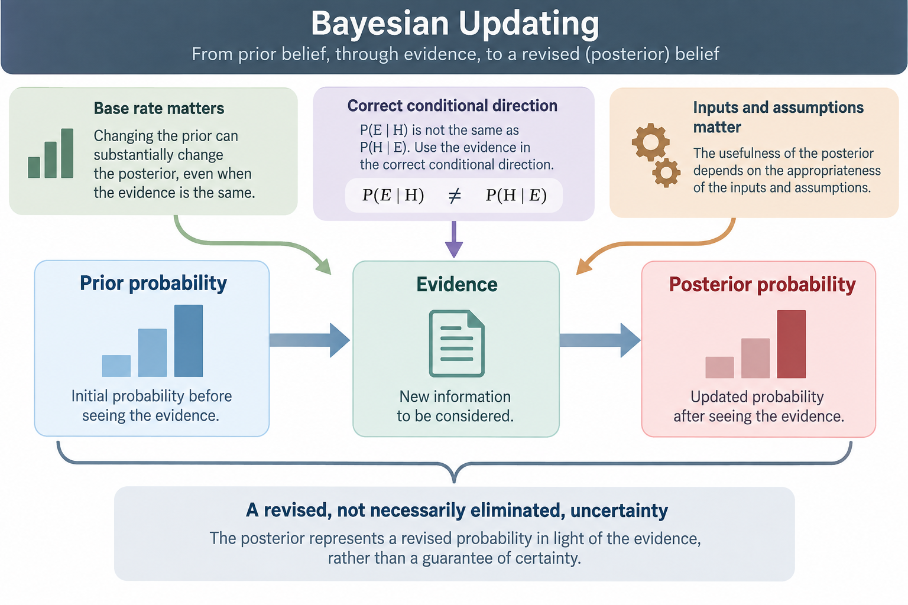
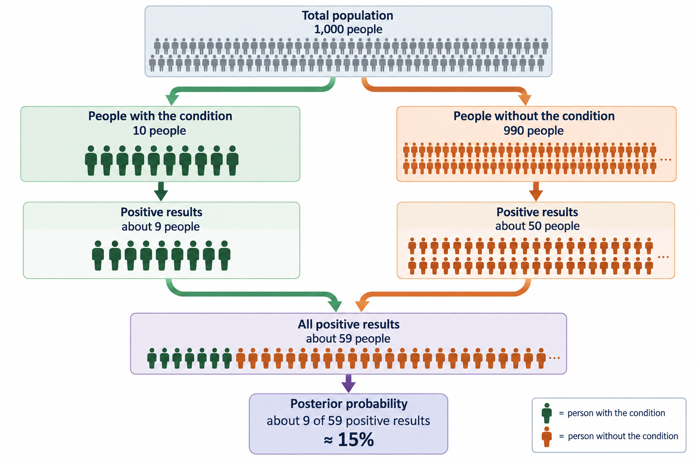
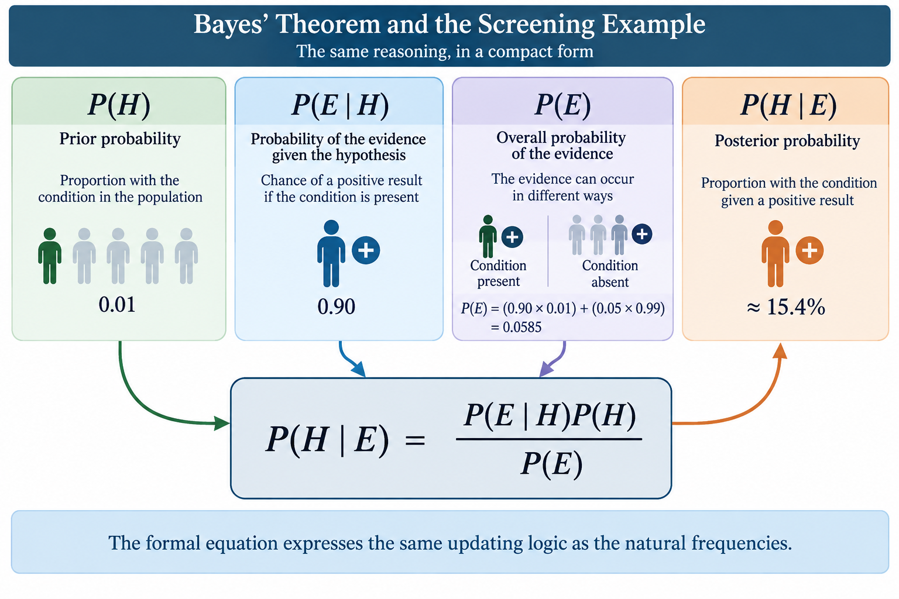
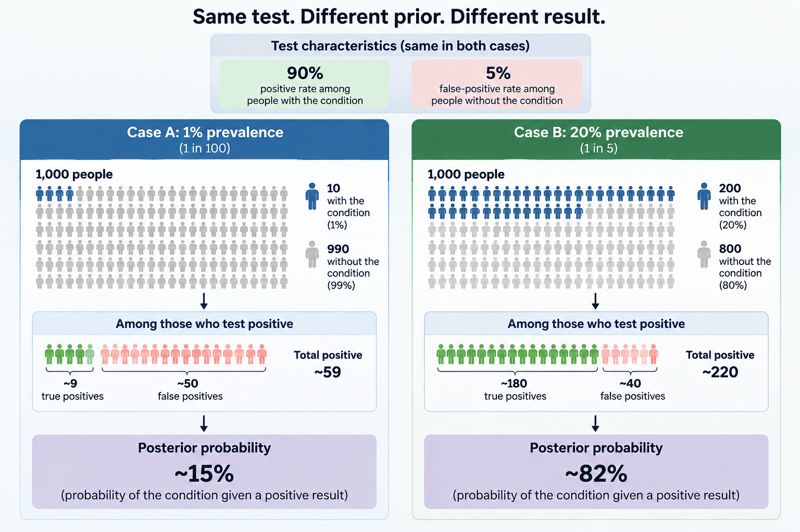

Structured material body is not supported for learner rendering.
This resource develops an intuitive account of Bayes' theorem before connecting that reasoning to the formal equation. A screening-test example makes the relationship between prior probability, evidence and posterior probability visible, while a comparison of different base rates shows why the same evidence can support different updated probabilities.
By following the explanation from natural frequencies to the Bayesian formula, you will develop a way to distinguish conditional probability questions, relate a prior probability to a posterior probability, and interpret how base rates affect the meaning of evidence.
Bayesian updating combines a prior probability with evidence to produce a posterior probability. The probability of evidence given a hypothesis, \(P(E\mid H)\), is not the same as the probability of the hypothesis given the evidence, \(P(H\mid E)\). Natural frequencies make this distinction concrete by showing all the ways the evidence can arise. The base rate matters because changing the prior can substantially change the posterior even when the characteristics of the evidence remain unchanged. Bayes' theorem expresses these relationships compactly, while the usefulness of any resulting probability still depends on the appropriateness of its inputs and assumptions.

Bayes' theorem is fundamentally about a simple question: how should new evidence change what you think is plausible?
Suppose you are uncertain whether a particular hypothesis is true. Before receiving any new evidence, you may already have some basis for judging how plausible it is. That starting probability is called the prior probability, or simply the prior.
Now suppose you observe some relevant evidence. If that evidence tells you something about the hypothesis, your original probability may need to change. The revised probability, after taking the evidence into account, is called the posterior probability.
The basic pattern is therefore:
prior probability → evidence → posterior probability
This is Bayesian updating. The important word is updating. The evidence does not simply erase what was known beforehand and replace it with a new judgement. Instead, it changes an existing probability. How much it changes that probability depends both on the starting point and on how informative the evidence is.
Nor does an update necessarily produce certainty. A probability might move from 1% to 15%, or from 20% to 82%. Either can be a substantial change while still leaving some uncertainty. Bayes' theorem provides a disciplined way of making such revisions explicit.
To understand how that works, however, we first need to distinguish two probability questions that are very easy to confuse.
Consider a screening test for a condition. Two questions about the test might initially sound almost identical:
What is the probability of a positive result if a person has the condition?
What is the probability that a person has the condition if their result is positive?
These are different questions.
If H represents the hypothesis that the person has the condition, and E represents the evidence of a positive test result, the first question is written P(E|H). The vertical bar means 'given', so this reads as 'the probability of E given H': the probability of a positive result given that the condition is present.
The second question is P(H|E): 'the probability of H given E'. Here we already know that the result is positive, and we want to know how probable the condition is in light of that result.
Changing what comes before and after the vertical bar changes the question. P(E|H) tells us how likely the evidence is under the hypothesis. P(H|E) tells us how plausible the hypothesis is after observing the evidence.
This distinction is crucial because the two probabilities are not generally equal. Imagine being told that 90% of people with a particular condition receive a positive test result. That gives you P(positive|condition). It does not, by itself, tell you that someone with a positive result has a 90% probability of having the condition.
Why not? Because positive results may also occur among people who do not have the condition. And before interpreting a positive result, it also matters how common the condition was in the first place.
Bayes' theorem connects these different pieces of information. Before introducing the formula, we can make the relationship much easier to see by thinking about actual numbers of people.
Structured material body is not supported for learner rendering.
Suppose the condition in our example affects 1% of the relevant population. Before knowing anyone's test result, a randomly selected person therefore has a 1% probability of having the condition. In this setting, the 1% prevalence is our prior probability.
It may seem that the test result should quickly overwhelm such a starting probability. But the size of the two underlying groups matters.
Imagine 1,000 people. If 1% have the condition, we expect 10 people to have it and 990 not to have it. Before we have considered any test results, there is already a large imbalance between these groups.
That imbalance matters because a positive result can arise in either group. Some of the 10 people with the condition will test positive. But some of the 990 people without the condition may also test positive. Because the second group is so much larger, even a relatively small false-positive rate can generate a noticeable number of positive results.
This is why the underlying prevalence, or base rate, cannot simply be ignored when interpreting evidence. The evidence has to be understood against the population from which it arose.
We can now add the test results to our 1,000 people and see exactly what happens.
Structured material body is not supported for learner rendering.
Now suppose the test produces a positive result for 90% of people who have the condition. Of our 10 people with the condition, we would therefore expect 9 to test positive.
If that were the only way to obtain a positive result, interpretation would be straightforward. But suppose the test also produces a false positive for 5% of people who do not have the condition.
There are 990 people in that second group. Five per cent of 990 is 49.5, so in a population of this size we would expect about 50 of them to receive a positive result even though they do not have the condition.
We can now bring the two routes to a positive result together:
- about 9 positive results come from people who have the condition;
- about 50 positive results come from people who do not.
That gives about 59 positive results altogether.
Now return to the question we actually want to answer: if a person has received a positive result, what is the probability that they have the condition?
We are no longer interested in all 1,000 people. We are looking specifically at the roughly 59 people with positive results. Of those, about 9 have the condition. The relevant proportion is therefore approximately 9 out of 59, which is about 15%.
This result is worth comparing with two other numbers in the example. Before the test, the probability was 1%. After a positive result, it is roughly 15%. The evidence has therefore made a substantial difference. But the result is nowhere near 90%.
The 90% figure answered a different question: how often do people with the condition test positive? Our 15% figure answers: among people who tested positive, how many have the condition?
Natural frequencies make the difference visible. They also reveal why the base rate matters: the group without the condition began almost 100 times larger than the group with it, so a 5% false-positive rate in that large group generated more positive results than the 90% positive rate did in the much smaller group with the condition.
Nothing mysterious has happened. We have simply accounted for all the ways in which the evidence—a positive result—can arise.
Structured material body is not supported for learner rendering.

The population example gives us the logic of Bayesian updating without requiring a formula. Bayes' theorem expresses that same logic more compactly.
If H is our hypothesis and E is the observed evidence, Bayes' theorem is:
P(H|E) = P(E|H) × P(H) / P(E)
Each part now has a familiar role.
P(H) is the prior probability: the probability of the hypothesis before considering the new evidence. In our example, the prevalence of the condition is 1%, so P(H) = 0.01.
P(E|H) is the probability of observing the evidence if the hypothesis is true. The test produces a positive result for 90% of people with the condition, so P(E|H) = 0.90.
P(H|E) is what we want to find: the posterior probability that the person has the condition given that the test result is positive.
That leaves P(E), the overall probability of observing the evidence. This term matters because positive results do not occur only among people who have the condition. Our natural-frequency example showed two routes to a positive result, and both must contribute to the overall probability of seeing one.
For the group with the condition, the contribution is 0.90 × 0.01. For the group without the condition, the contribution is 0.05 × 0.99. Together:
P(E) = (0.90 × 0.01) + (0.05 × 0.99) = 0.0585.
We can now substitute the values into Bayes' theorem:
P(H|E) = (0.90 × 0.01) / 0.0585 ≈ 0.154.
So the posterior probability is approximately 15.4%.
This closely matches the roughly 15% obtained from the natural-frequency representation. The small difference comes from using rounded whole-person counts in the population example.
The formula has not changed the reasoning. It has compressed it. The prior describes where we started. P(E|H) describes how compatible the evidence is with the hypothesis. P(E) makes us account for how often that evidence occurs overall. The result, P(H|E), is the revised probability after observing the evidence.
This also explains why Bayes' theorem is more than simply reversing P(E|H). Moving from the probability of evidence given a hypothesis to the probability of a hypothesis given evidence requires information about the prior and about the other ways the evidence can occur.
Structured material body is not supported for learner rendering.

We can now see more precisely why the starting probability matters. Keep exactly the same test characteristics: 90% of people with the condition test positive, and 5% of people without it also test positive. Change only the prevalence of the condition.
Instead of 1%, suppose 20% of a population of 1,000 have the condition.
That gives 200 people with the condition and 800 without it. Applying the same test characteristics:
- 90% of 200 gives 180 positive results among people with the condition;
- 5% of 800 gives 40 positive results among people without the condition.
There are therefore 220 positive results altogether, and 180 of those come from people who have the condition.
The posterior probability is now 180 out of 220, or about 82%.
Compare the two situations. With a 1% prevalence, a positive result led to a posterior probability of about 15%. With a 20% prevalence, the same kind of positive result leads to a posterior probability of about 82%.
The test did not become more accurate. The 90% and 5% figures did not change. What changed was the prior probability.
This comparison isolates the base-rate effect. When the condition is rare, the population contains a very large group without it, creating many opportunities for false positives. When the condition is more common, a much larger proportion of positive results comes from people who actually have it.
So evidence cannot always be assigned a single meaning independently of context. A positive result is evidence in both cases, but the probability it supports after updating depends partly on what was plausible beforehand.
This returns us to the organising idea from the beginning: Bayesian reasoning does not ask what the evidence means in isolation. It asks how the evidence should revise a prior probability.
Structured material body is not supported for learner rendering.

Screening tests provide a useful way to see Bayesian updating because the different groups and outcomes can be represented clearly. But the underlying reasoning is not limited to tests or medical contexts.
The same structure applies whenever new information changes the probability assigned to a possibility.
A researcher may begin with different degrees of plausibility for competing explanations and revise them in light of observed data. A system classifying email may revise the probability that a message is unwanted after observing particular features. In practical reasoning, an initially plausible explanation may become more or less plausible as new information arrives.
The details of these situations differ, but the organising pattern is familiar:
prior probability → evidence → posterior probability
In each case there is some starting degree of plausibility, some new evidence, and a revised degree of plausibility after the evidence has been taken into account.
The conditional-probability distinction still matters. We need to distinguish between asking how likely particular evidence would be under a hypothesis and asking how plausible the hypothesis is after observing that evidence. The prior still matters because evidence updates a starting probability rather than being interpreted in a vacuum.
The screening example therefore provides more than a calculation to remember. It exposes a general structure for reasoning under uncertainty: begin with what is plausible, consider the evidence in relation to the possibilities, and update accordingly.
Bayes' theorem tells us how a set of probabilities relate. It does not, by itself, guarantee that every probability supplied to the calculation is appropriate.
This distinction matters when interpreting a posterior probability. In our worked example, the calculation used a 1% prior, a 90% positive rate among people with the condition, and a 5% false-positive rate. Given those inputs, Bayes' theorem specifies how they combine. But the usefulness of the resulting posterior depends on the appropriateness of those inputs for the situation being considered.
The mathematics of updating and the basis for the inputs are therefore related but distinct questions. A calculation can correctly apply Bayes' theorem while its interpretation still depends on the assumptions and information from which the probabilities were obtained.
The posterior should also remain a probability. Bayesian updating revises uncertainty; it does not necessarily remove it. In the first screening example, a positive result moved the probability from 1% to about 15%. That was a substantial update, but it did not establish the condition with certainty. In the second case, the posterior rose to about 82%, which again represented a revised degree of uncertainty rather than an automatic certainty.
We can now return to the simple structure with which we began:
prior probability → evidence → posterior probability
That compact representation carries more meaning than it did at the outset. The prior provides the starting probability. The evidence must be interpreted through the correct conditional relationship. The overall probability of the evidence matters because the same evidence can arise in more than one way. The base rate helps determine how strongly the evidence changes the starting point. Bayes' theorem brings these quantities together to produce the posterior.
The central idea is therefore not simply a formula. It is a disciplined way of answering a recurring question under uncertainty: given what was plausible beforehand and the evidence now observed, what should the revised probability be?
Structured material body is not supported for learner rendering.
Closing
The key idea to carry forward is that evidence changes a probability in relation to where that probability started. Bayes' theorem makes that update explicit: begin with a prior, interpret the evidence in the correct conditional direction, and arrive at a posterior that represents revised rather than necessarily eliminated uncertainty.